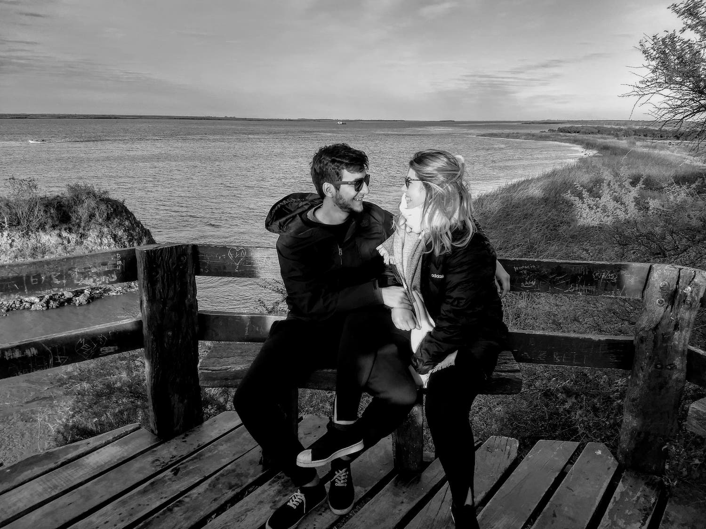
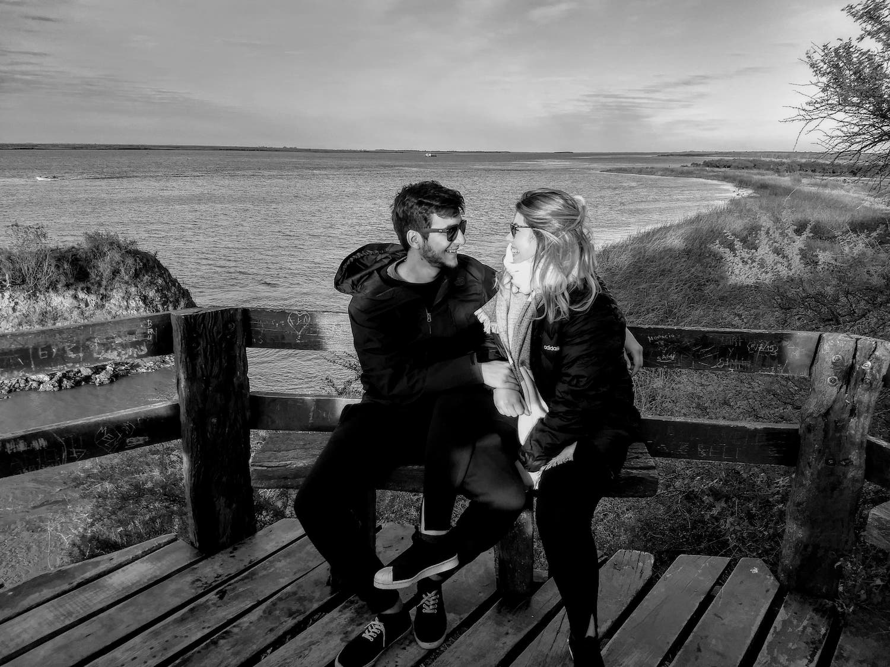

Agus & Nare
Hace un año decidimos que queriamos recorrer el mundo juntos y nos dimos cuenta que, en vez del mundo, era la vida.
La fiesta
Creemos que la mejor manera de celebrar es compartir con las personas que uno más quiere. Por eso, el 23 de Marzo a las 19:00hs te esperamos para festejar con nosotrxs el comienzo de esta nueva etapa!
Cómo llego?
La quinta está ubicada a cuatro cuadras de la bajada Graham Bell del Acceso Oeste. Te recomendamos doblar en Belgrano y no en Bouchard, siguiendo el camino que dejamos en el mapa. El auto lo podés dejar afuera, va a haber seguridad toda la noche.
Cómo me visto?
Como quieras! Solo tené presente que vamos a estar bailando y caminando sobre pasto toda la noche.
Nos querés regalar algo?
Con que vengas, alcanza y sobra! Si vas a regalarnos algo de todos
modos, podés colaborar con nuestra luna de miel ♥
CBU: 0720035988000038258886
CUIL: 24-36902253-5
El civil
Si querés vernos poniendo el gancho y tirarnos arroz, te esperamos el lunes 11 de Marzo a las 13:00hs en el Museo Sivori. Después estás invitadx a quedarte con nosotrxs celebrando como corresponde, comiendo y tomando algo en Williamsburg, a unos metros del museo.